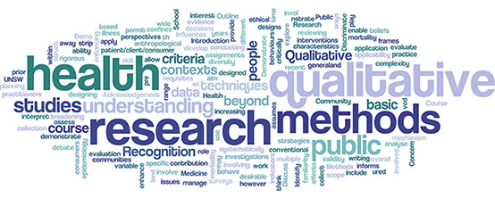

E D U C A T I O N
- Full Stack Developer | ADA Developers Academy | Feb 2020 - Current
- Ph.D. - Developmental Health Psychology | University of Nebraska, Lincoln | Grad. 2011
- M.A. - Social Health Psychology | San Diego State University | Grad. 2005
- B.A. - Psychology with a Minor in Business | California State Polytechnic University, Pomona | Grad. 2002
D E V E L O P E R
Technical Skills
- Ruby | Ruby on Rails | Javascript | React | HTML5 | CSS | Postman
Projects
React Applications
E D I T O R I A L
Managing Editor and Resident Health Advising Writer| www.terimiyahira.com | 2016 - 2018
- Assembled an aesthetically pleasing green beauty website using Wordpress by self-taught HTML code
- Sole content creator, writer, and editor for health topics with ~500 average daily users
- Revamped written content and established Youtube channel
- Created health related topics to improve martial arts practices
H E A L T H R E S E A R C H
Laboratory Accessioner | US LABS Irvine, CA | Mar '03 - Nov '03
- Divided approximately 100 incoming biological research specimens such as blood, internal tumor growths, blood, and bone marrow using centrifuges, sterile pipettes, scalpels, and test tubes.
Diabetes Assay Researcher | University of California Irvine, Dept. of Pathology | Aug '02 - Jul '03
- Prepared diabetes assay lab tests by preparing patient urine for solid and liquid centrifuge separation for patented assays HbA1C levels testing.
G R A D U A T E R E S E A R C H

Doctoral Dissertation | University of Nebraska, Lincoln, Dept. of Psychology | Feb '10 - Aug '11
- Independently managed a 187-page dissertation examining moral emotions and health decisions based on a proposed integrated Theory of Planned Behavior using SEM and multi-group analysis computed in MPLUS.
Graduate Research Assistant | University of Nebraska, Lincoln, Dept. of Psychology & Dept. of Sociology | Aug '06 - Apr '10
Methamphetamine Study
- Interviewed four methamphetamine addicts in drug rehab centers in Grand Island, NE and Omaha, NE using qualitative methods by administering 4-8 hour questionnaires over three sessions. Follow-up visits were conducted to complete the questionnaires.
Affect Health Study
- Co-authored a manuscript in the journal Appetite on human fruit and vegetable consumption.
- Coordinated with the UNL campus Bureau of Sociological Research (BOSR) to make phone calls to 446 community participants using the questionnaire.
Lead Graduate Researcher | San Diego State University, Dept. of Psychology | Aug '03 - May -05
Meta-Analysis on Coping with Diabetes
- Authored meta analysis in the Journal of Behavioral Medicine examining effects of coping strategies with diabetes in psychological well-being such as depression, anxiety,
and glycemic control.
Social Perception and Identity Study
- Co-authored a manuscript published in Self & Identity
- Lead presenter at the Society for Personality and Social Psychology 2006 conference, in Palm Springs, CA.
T E A C H I N G
Graduate Teaching Assistant | University of Nebraska, Lincoln, Department of Psychology | Aug '07 - Aug '10
- Course: Honors Undergraduate Research Methods
Graduate Teaching Assistant** | San Diego State University, Department of Psychology | Aug '04 - Aug '05
- Course: Advanced Statistical Methods in Psychology
P U B L I C A T I O N S
- Christensen, P. N., *Duangdao, K., Isaacs, H., & Alfonso-Reese, L. (2012). Projection and mirror effects in cross-group interactions: A social relations model of similarity perceptions. Self & Identity, 11, 36-50.
- Roesch, S.C., *Duangdao, K.M., Vaughn, A.A., Villodas, F., & Aldridge, A.A. (2010). Dispositional hope and the propensity to cope: A daily diary assessment of minority adolescents. Cultural Diversity and Ethnic Minority Psychology, 16, 191-198.
- Kiviniemi, M. T., & *Duangdao, K. M. (2009). Affective associations mediate the influence of cost-benefit beliefs on fruit and vegetable consumption. Appetite, 52, 771-775.
- *Duangdao, K.M., & Roesch, S.C. (2008). Coping with diabetes in adulthood: A meta-analysis. Journal of Behavioral Medicine, 31, 291-300.